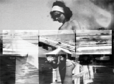

|
SONIC FICTION - SYNAESTHETIC VIDEOS FROM AUSTRIA
Aigelsreiter, Bruckmayr, Fruhauf, Goldt u.a. | Österreich 2002-04 | 65 Min.
Format: DVD
Material: DV
Originalsprache: ohne Dialoge
Musik: Aigelsreiter, fdc, Fuckhead, Janka u.a.
Verleih: Sixpack Film, Wien
www.index-dvd.at
Parallel zur vielbeachteten Wiener elektronischen Musikszene entwickelte sich in den letzten Jahren auch im visuellen Bereich eine eigenständige Kultur. An der Schnittstelle entstanden unzählige Videos, Webpages, CD-Roms und audiovisuelle Liveacts. Die Syaesthetic Videos loten das Verhältnis im Zusammenspiel von Ton und Bild neu aus, zerlegen rhythmische Muster. In ihrem Mittelpunkt steht die Suche nach einer anderen visuellen Sprache und Ausdrucksform und ein neuer Umgang mit Bildern.
"Trotz aller ästhetischen und konzeptionellen Unterschiede ist allen hier versammelten Arbeiten gemeinsam, dass sie von hohem formalen Stilbewusstsein, dem Mut zum Experiment und dem Willen gekennzeichnet sind, neuartige und radikale Wege zu (ver-)suchen und diese kompromisslos zu beschreiten." - Barbara Pichler, Norbert Pfaffenbichler
Alle Synaesthetic Videos
zurück
|